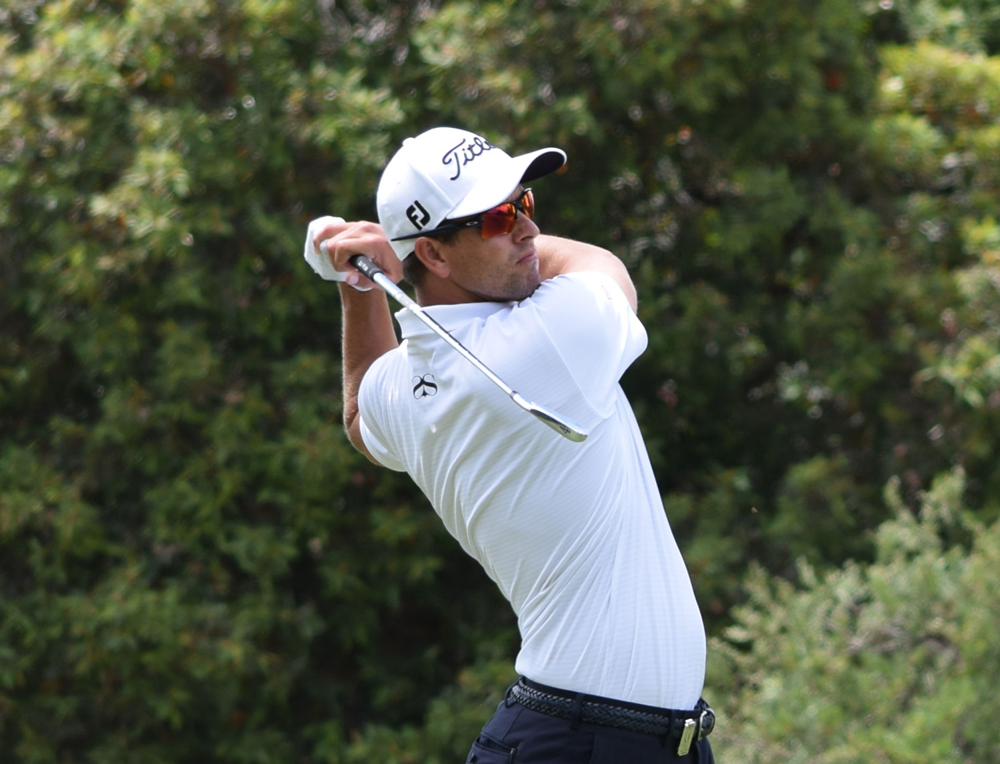
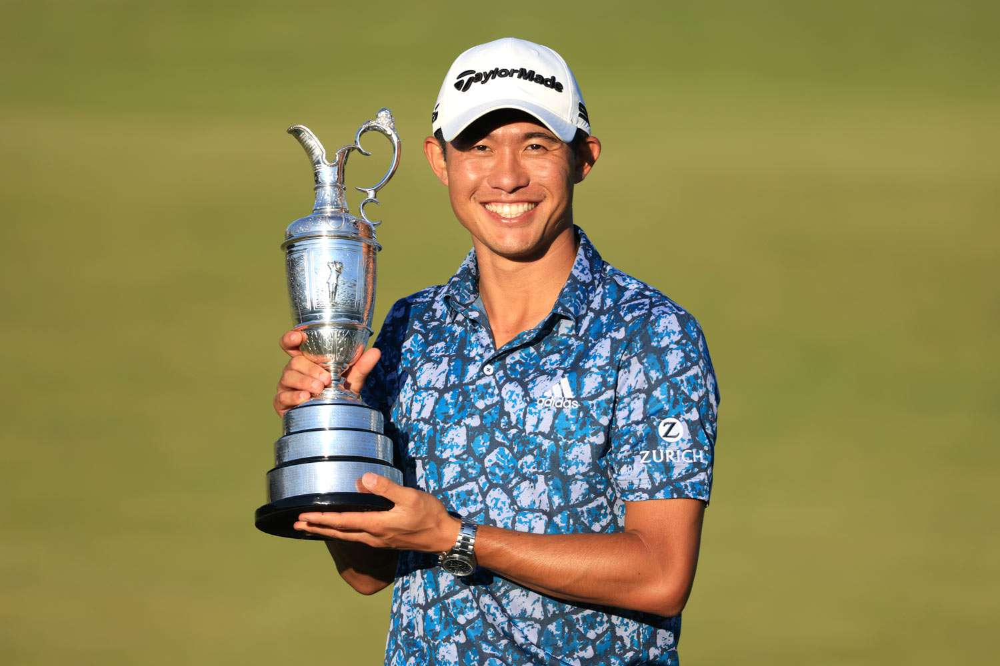
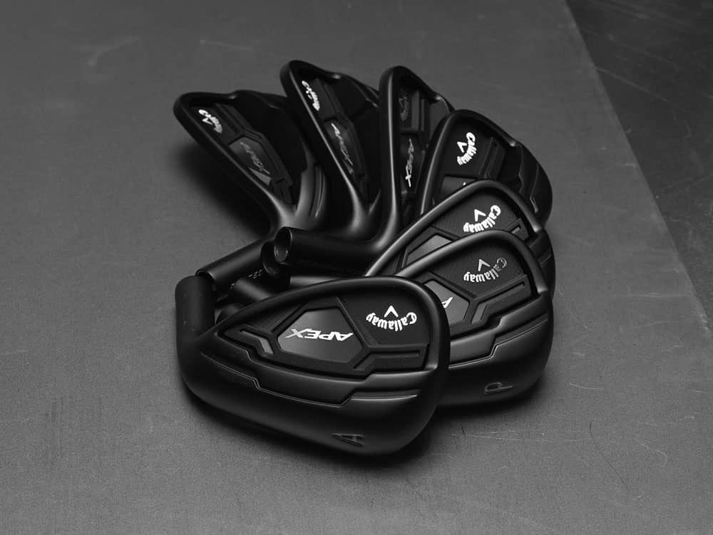

Engineered for Performance. Proven on Tour.
Tour Tech Golf delivers precision-crafted clubs built on data, tested by professionals, and designed for players who demand more from their equipment.
Learn More Why Tour Tech Golf
Tour-Backed Performance
Trusted by professionals on major tours worldwide
Rigorous Testing
Every club creates consistent, repeatable results.
Timeless Design
Classic looks meet modern-day engineering
The Tour Tech Pro Forged Irons

Our iron Tour Series Iron line represents the culmination of three years of development and thousands of hours of tour player feedback. Forged irons ensure exceptional stability and forgiveness without sacrificing shot-making ability. Available in both standard and tour-preferred muscle-back configurations, we provide a timeless look in our lineup for all players to feel confident in their swing.
Our Commitment
History of Excellence
Backed by elite players on tour with over 50 combined wins. Tour Tech and the pros ensures greatness with each swing
Precision Fitting Program
Our certified fitters use optimize shaft selection, lie angle, loft, and swing weight for your specific swing
